Scegli dal computer le foto della tua Fujifilm e scarica solo quelle. Dal lettore di schede, con il cavo o via Wi-Fi, su Mac e Linux.Pick photos from your Fujifilm on your computer and download only those. From a card reader, by cable or over Wi-Fi, on Mac and Linux.
macOS · Fedora e Ubuntu con GNOME · gratuito e open source (MIT)macOS · Fedora and Ubuntu with GNOME · free and open source (MIT)
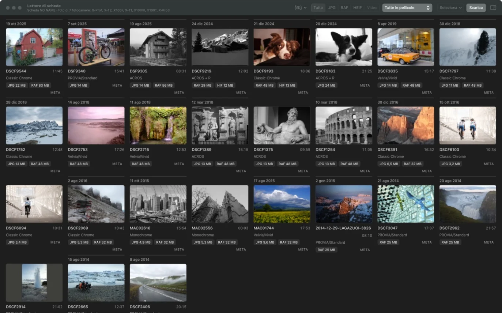
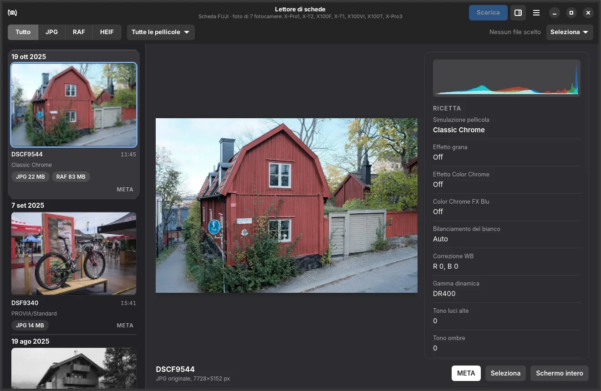
macOS e GNOME: la stessa app, nativa su ogni sistema.macOS and GNOME: the same app, native on each system.
Perché ProvinoWhy Provino
Provino nasce dalla mia passione per la fotografia e per il mondo Fujifilm, e da un bisogno molto semplice: scaricare le foto sul computer in modo agevole, con il cavo o in rete, senza dover aprire programmi di ritocco fotografico solo per copiarle.
Credo nell'open source, per questo metto a disposizione i sorgenti di Provino insieme alle app pronte per macOS e Linux, sperando che possa essere utile anche ad altri fotografi.
Provino grew out of my passion for photography and for the Fujifilm world, and out of a simple need: getting photos onto my computer easily, by cable or over the network, without opening a photo editing program just to copy them.
I believe in open source, so I'm sharing Provino's source code along with ready-to-use apps for macOS and Linux, hoping other photographers find it useful too.
Marco Cislaghi · autore di Provinoauthor of Provino
Novità della 1.1New in 1.1
Scegli a colpo d'occhio, scarica per evento.Pick at a glance, download by event.
Niente elenchi di nomi di file: vedi tutte le foto, ogni giornata ha il suo colore e con pochi clic un weekend intero finisce in una sola cartella, con il nome dell'evento.No lists of file names: you see every photo, each day has its own color, and in a few clicks a whole weekend lands in a single folder named after the event.
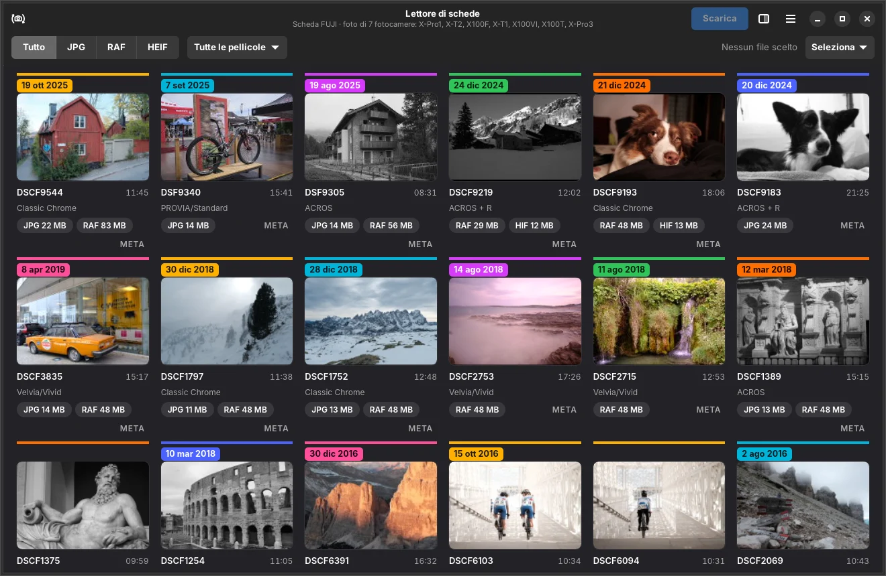
1Ogni giornata, il suo coloreEach day, its own colorLa linea sopra le foto e l'etichetta con la data cambiano colore a ogni giorno di scatto: vedi subito dove inizia e dove finisce un'uscita.The line above the photos and the date label change color with every shooting day: you see at once where an outing starts and ends.
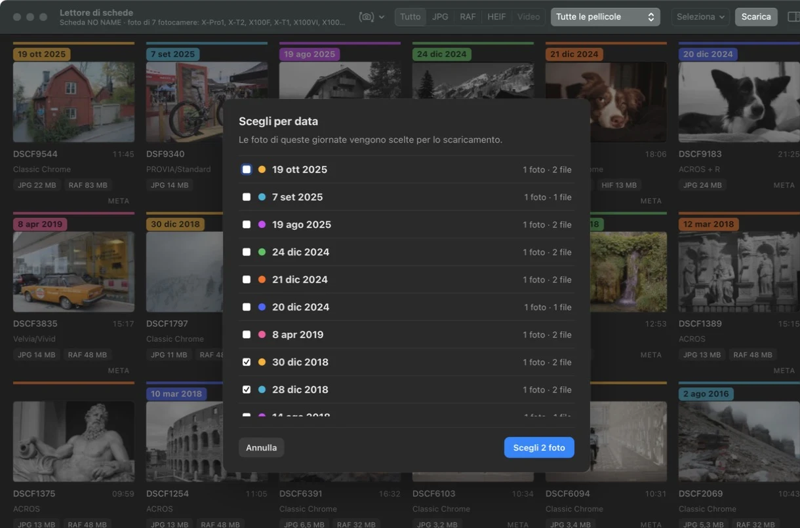
2Seleziona › Per data…Select › By date…Spunti i giorni che ti servono, per esempio sabato e domenica, e Provino sceglie tutte le loro foto. Rispetta i filtri: con «RAF» attivo prende solo i RAF.Tick the days you need, say Saturday and Sunday, and Provino picks all their photos. Filters still apply: with "RAF" on it takes only the RAFs.
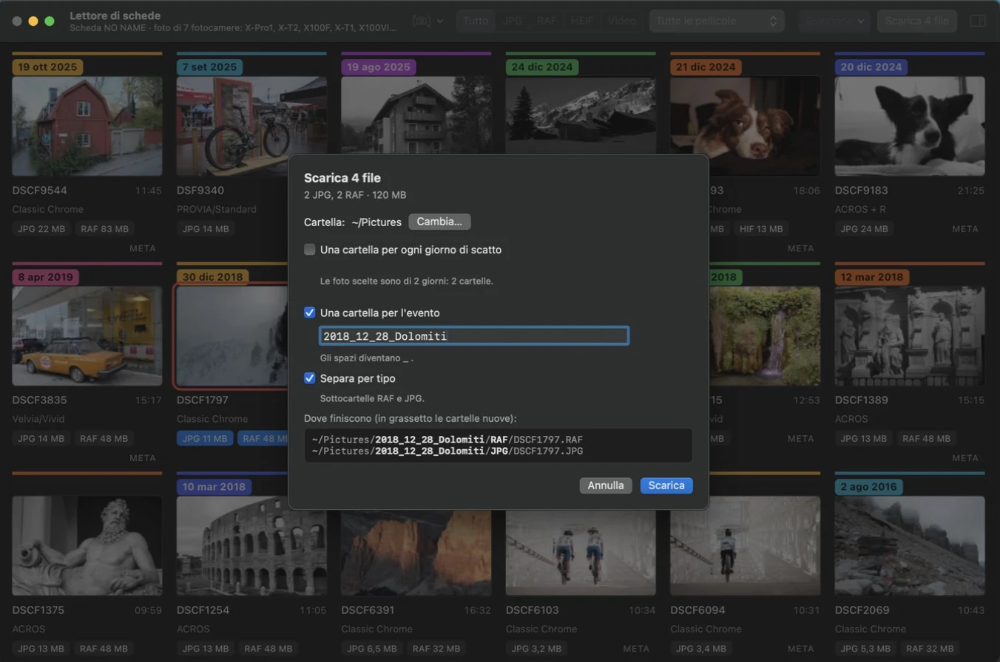
3Una cartella per l'eventoOne folder per eventIl nome parte già dalla data del primo giorno, come 2026_10_30_: aggiungi solo il nome dell'evento. Gli spazi diventano _ da soli e puoi separare JPG e RAF dentro l'evento.The name already starts with the first day's date, like 2026_10_30_: just add the event name. Spaces turn into _ by themselves and you can split JPG and RAF inside the event.
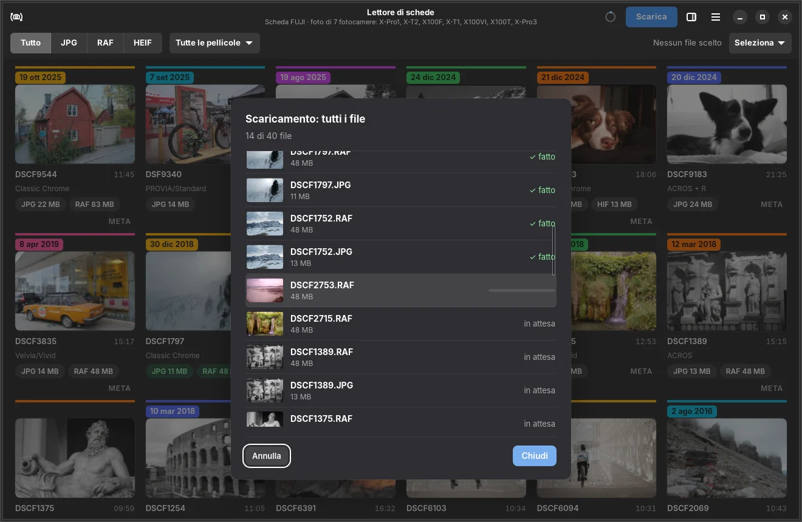
4Mostra tuttiShow allDurante lo scaricamento vedi tutti i file con miniatura e stato. Il file in corso resta sempre al centro: se qualcosa si interrompe, sai subito dove.While downloading you see every file with a thumbnail and its status. The current file always stays in the middle: if something stops, you know exactly where.
FunzioniFeatures
Il foglio dei provini, sul tuo schermo.The contact sheet, on your screen.
Guardi tutti gli scatti, scegli i migliori e scarichi soltanto quelli. Come una volta con la matita rossa sul foglio dei provini.See every shot, pick the best and download only those. Like the red pencil on a contact sheet.
Tutti gli scattiEvery shot
Miniature di tutta la scheda, con RAW e JPG dello stesso scatto riuniti in un solo provino.Thumbnails of the whole card, with the RAW and JPG of each shot grouped in one frame.
Scegli con un clicPick with a click
Etichette JPG e RAF, Maiusc+clic per una serie, riquadro, oppure «Tutti i RAF» in un colpo.JPG and RAF labels, Shift+click for a run, drag box, or "All RAFs" in one go.
La ricetta, sempreThe recipe, always
Il pannello META mostra pellicola, grana, Color Chrome, bilanciamento, gamma dinamica, dati di scatto, dimensioni e istogramma. «Copia ricetta» la copia come testo.The META panel shows film, grain, Color Chrome, white balance, dynamic range, shooting data, size and histogram. "Copy recipe" copies it as text.
FiltriFilters
Mostra solo JPG, RAF o video, oppure una sola simulazione pellicola. Il filtro non tocca quello che hai già scelto.Show only JPGs, RAFs or videos, or a single film simulation. Filters never touch what you've already picked.
Fai scegliere chi riceveLet them choose
Crea un PDF dei provini con una casella «Mi piace» per ogni foto. Chi lo riceve spunta le preferite, anche dal telefono; quando torna, Provino seleziona proprio quelle.Make a PDF contact sheet with a "Like" box per photo. The recipient ticks favourites, even on a phone; when it comes back, Provino selects exactly those.
Cartelle ordinateTidy folders
Una cartella per ogni giorno di scatto o una per l'evento (2026_10_30_Nome) e, se vuoi, sottocartelle RAF, JPG e VIDEO. Vedi prima dove finisce ogni file.One folder per shooting day or one per event (2026_10_30_Name) and, if you like, RAF, JPG and VIDEO subfolders. You see where each file goes first.
Nessun file a metàNo half files
Se il cavo si stacca o il Wi-Fi cade, i file incompleti non restano nella cartella e quelli mancanti tornano selezionati.If the cable comes out or Wi-Fi drops, no incomplete files are left behind and the missing ones are selected again.
Sul Mac ha la barra dei menu, la barra degli strumenti e le scorciatoie ⌘. Su GNOME la barra in alto, il menu principale e le finestre di libadwaita. Tema chiaro, scuro o automatico.On the Mac it has the menu bar, the toolbar and ⌘ shortcuts. On GNOME, the header bar, the main menu and libadwaita dialogs. Light, dark or automatic theme.
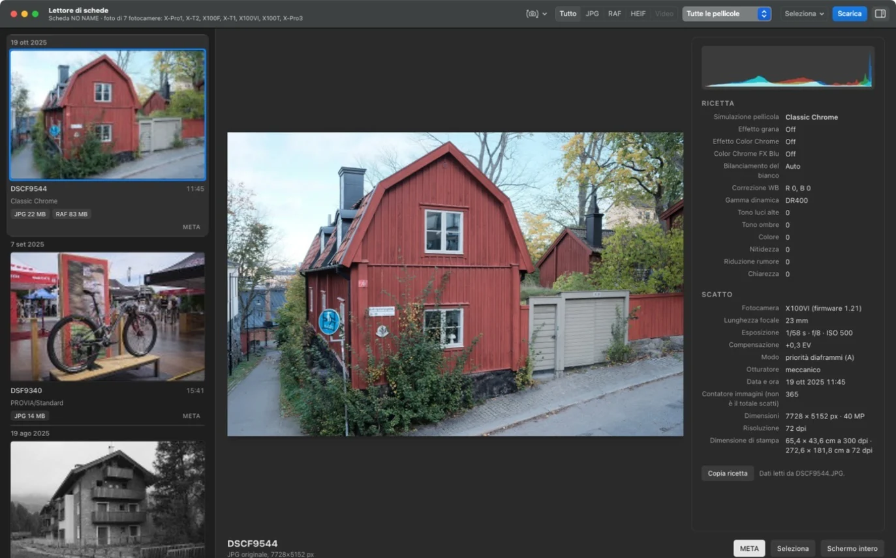
macOSfoto grande, istogramma e ricetta affiancatilarge photo, histogram and recipe side by side
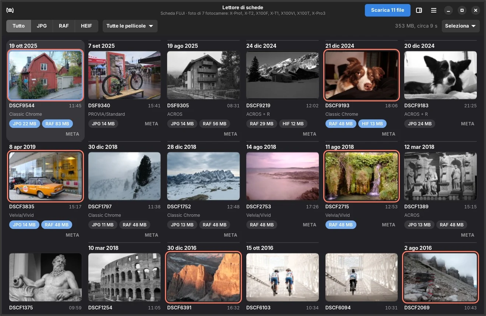
GNOMEscegli con le etichette, poi Scaricapick with the labels, then Download
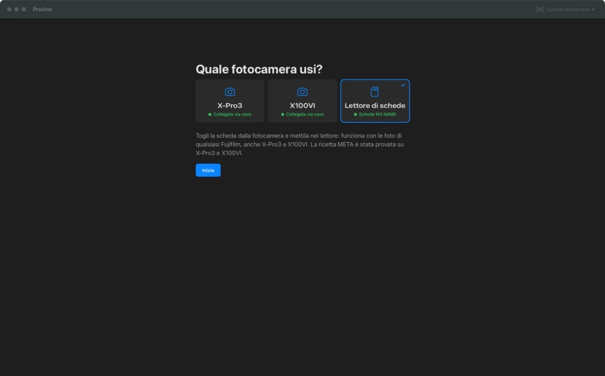
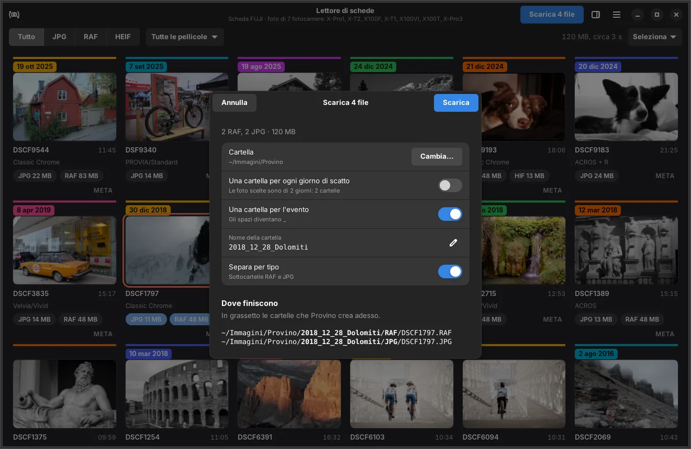
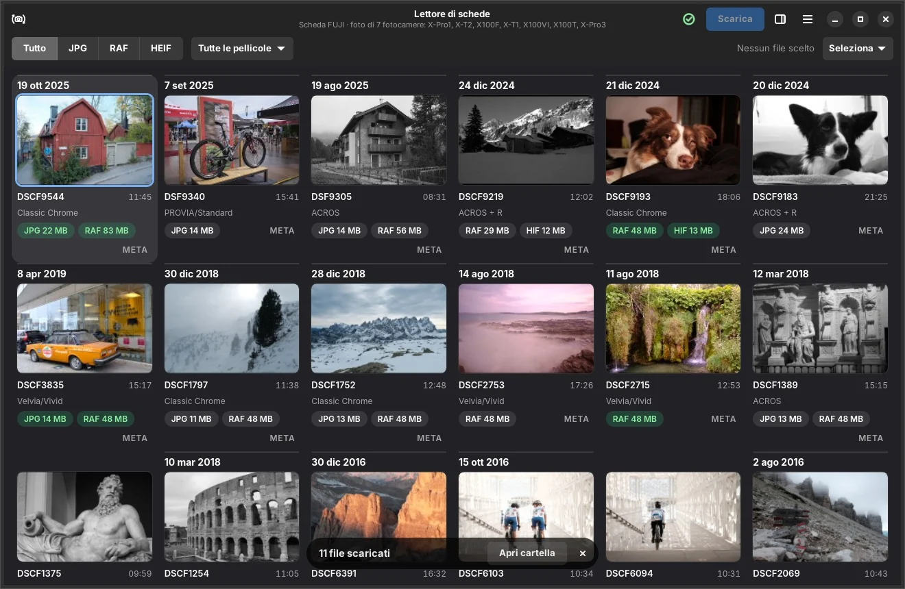
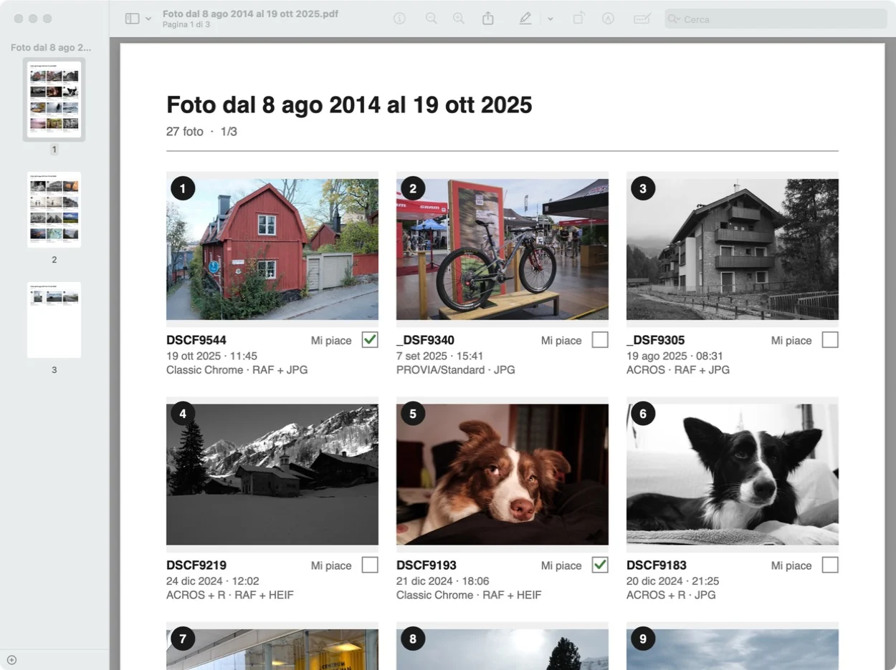
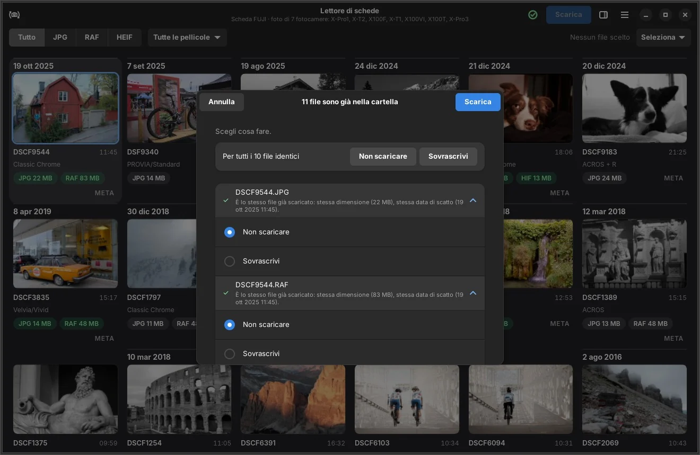
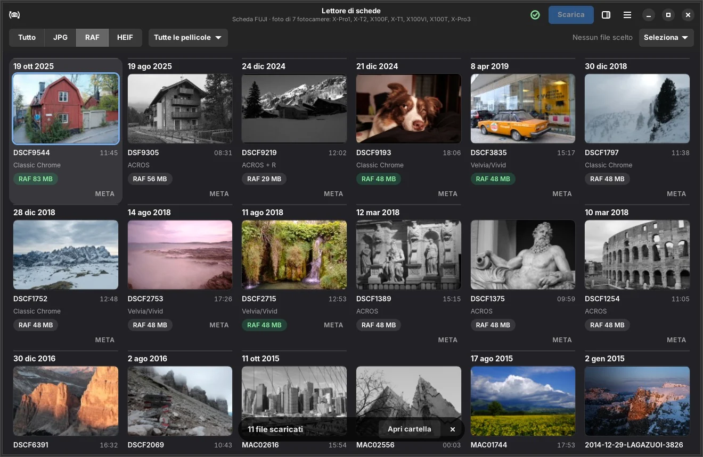
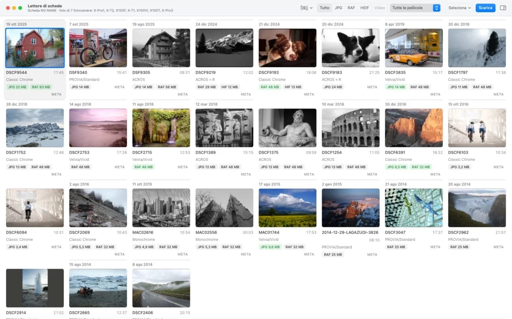
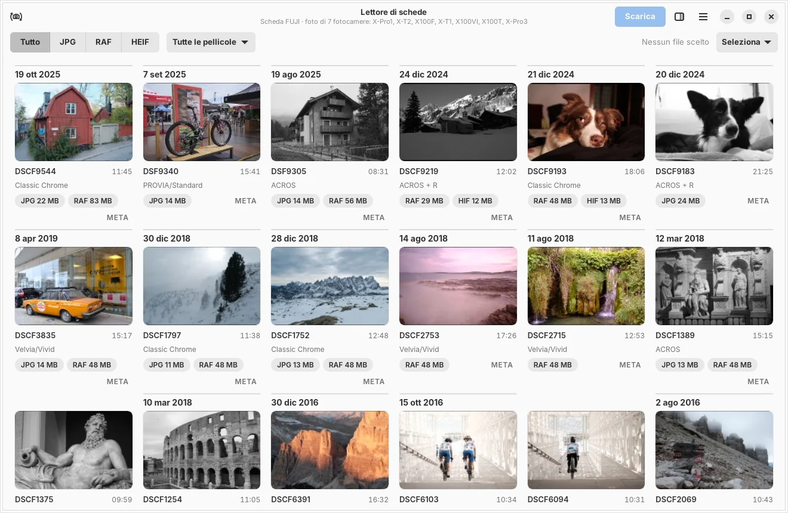
CollegamentiConnections
Lettore di schede, cavo o Wi-Fi.Card reader, cable or Wi-Fi.
X-Pro3
X100VI
Altre FujifilmOther Fujifilm
Cosa vediWhat you see
Lettore di schedeCard reader
✓
✓
✓
JPG, RAF e video: il più veloce, un RAF in meno di un secondoJPG, RAF and video: the fastest, a RAF in under a second
Cavo USBUSB cable
✓
✓
—
JPG, RAF e video, tutte e due le schedeJPG, RAF and video, both cards
Wi-Fi di casaHome Wi-Fi
✓
—
—
JPG e RAFJPG and RAF
Wi-Fi direttoDirect Wi-Fi
✓
—
—
solo JPG, scheda 1 (limite della fotocamera)JPG only, card 1 (camera limit)
Con il lettore di schede Provino funziona con le foto di qualsiasi Fujifilm: la ricetta è stata provata con X-Pro1, X-T1, X100T, X-T2, X100F, X-Pro3 e X100VI, anche in HEIF. Con il cavo un RAF arriva in pochi secondi. Il Wi-Fi è più lento ma non serve nessun filo.With a card reader Provino works with photos from any Fujifilm: the recipe has been tested with the X-Pro1, X-T1, X100T, X-T2, X100F, X-Pro3 and X100VI, HEIF included. By cable a RAF arrives in a few seconds. Wi-Fi is slower but needs no wire.
SicurezzaSafety
La tua scheda non si tocca.Your card stays untouched.
Provino legge soltanto: non cancella, non modifica e non formatta mai nulla sulla scheda della fotocamera.Provino only reads: it never deletes, changes or formats anything on the camera's card.
Sul computer non sovrascrive niente senza chiedertelo: se un file c'è già, ti dice se è lo stesso o una foto diversa e decidi tu.On your computer it never overwrites without asking: if a file exists, it tells you whether it's the same or a different photo, and you decide.
FotocamereCameras
Nata con due Fujifilm, aperta a tutte.Born with two Fujifilms, open to all.
X-Pro3 · firmware 2.00X100VI · firmware 1.31
Sono le mie fotocamere, quelle con cui ho sviluppato e provato ogni funzione. Con il lettore di schede Provino legge le foto di qualsiasi Fujifilm; cavo e Wi-Fi vanno provati modello per modello, e se potrò provare altri modelli aggiungerò anche il loro supporto.They're my own cameras, the ones I built and tested every feature with. With a card reader Provino reads photos from any Fujifilm; cable and Wi-Fi must be tested model by model, and if I get to try other models I'll add support for them too.
Provate con i firmware indicati; con altre versioni dovrebbe funzionare, ma non è stato verificato.Tested with the firmware shown; other versions should work but haven't been verified.
Linux: se apri una nuova versione da Scaricati, Provino propone sempre di spostarla nella cartella delle applicazioni; la voce nel menu non resta più collegata a un file in Scaricati.Linux: when you open a new version from Downloads, Provino always offers to move it to the applications folder; the menu entry no longer stays linked to a file in Downloads.
1.1.2 · 10 novembre 2026November 10, 2026
Aggiornamento dentro Provino: quando esce una versione nuova premi «Scarica e installa», vedi la barra di avanzamento e Provino si riavvia aggiornato, senza passare dal browser. Il file viene controllato con l'impronta pubblicata su GitHub.In-app update: when a new version is out, press "Download and Install", watch the progress bar and Provino restarts updated, no browser needed. The file is checked against the checksum published on GitHub.
L'avviso di aggiornamento mostra le novità solo nella tua lingua.The update notice shows what's new in your language only.
1.1.1 · 10 novembre 2026November 10, 2026
Scarichi in una cartella evento che hai già? Scegli la cartella con «Cambia…» e le foto vanno direttamente lì dentro, nelle sottocartelle JPG e RAF, senza creare un'altra cartella. Un avviso ti segnala se stai per crearne una dentro l'evento.Downloading into an event folder you already have? Pick it with "Choose…" and the photos go right inside it, into its JPG and RAF subfolders, without creating another folder. A warning tells you if you're about to create one inside the event.
1.1.0 · 10 novembre 2026November 10, 2026
Colore per ogni giornata: linea e data colorate per vedere dove inizia e finisce ogni giorno di scatto.A color for each day: colored line and date to see where each shooting day starts and ends.
Seleziona › Per data…: spunti i giorni e Provino sceglie le loro foto, rispettando i filtri.Select › By date…: tick the days and Provino picks their photos, filters included.
Una cartella per l'evento, con il nome che parte dalla data del primo giorno (2026_10_30_Nome).One folder per event, named from the first day's date (2026_10_30_Name).
Mostra tutti: la coda dello scaricamento con miniature e stato, con il file in corso sempre al centro.Show all: the download queue with thumbnails and status, current file always in the middle.
1.0.0 · 9 novembre 2026November 9, 2026
Prima versione: app native per macOS e GNOME, lettore di schede, cavo USB e Wi-Fi, pannello META con istogramma, PDF dei provini con le caselle «Mi piace».First release: native apps for macOS and GNOME, card reader, USB cable and Wi-Fi, META panel with histogram, PDF contact sheet with "Like" boxes.